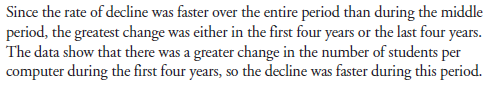
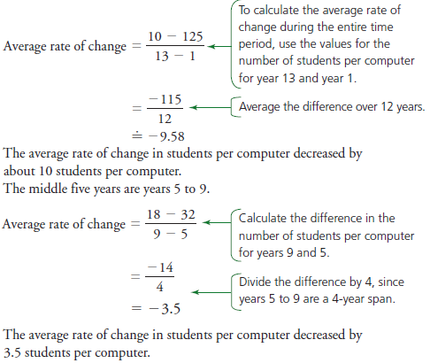

Rates of Change in Exponential and Logarithmic Functions
What we need to know
The average rate of change is not constant for exponential and logarithmic functions.
The instantaneous rate of change at a particular point can be estimated by using the same strategies used with polynomial, rational, and trigonometric functions.
Selecting a numerical strategy to calculate the average rate of change
The average number of students per computer in public schools is given in the table. Year 1 is 1983.
- Calculate the average rate of change in students per computer during the entire time period and during the middle five years of the data.
- What conclusions can you draw?


Selecting a strategy for calculating the instantaneous rate of change
Using the data from the previous example, determine the instantaneous rate of change in students per computer for year 8.

Try calculating graphically using your graphing calculator
- Plot the data, and then fit an exponential curve to the data.
- Position the cursor at year 8, and draw the tangent.
- The calculator provides the equation of the tangent.
- The slope of the tangent at year 8 gives the instantaneous rate of decline.
Need To Know!
The instantaneous rate of change for an exponential or logarithmic function can be determined numerically or graphically.
The graph of an exponential or logarithmic function can be used to determine the period during which the average rate of change is least or greatest.
The graph of an exponential or logarithmic function can be used to predict the greatest and least instantaneous rates of change and when they occur.